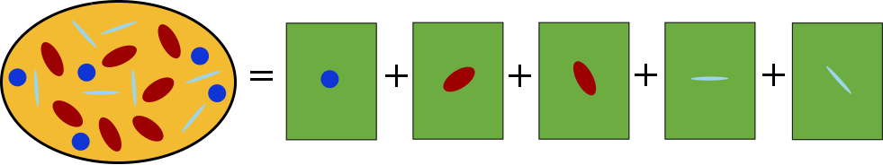
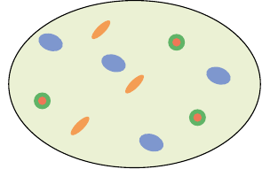
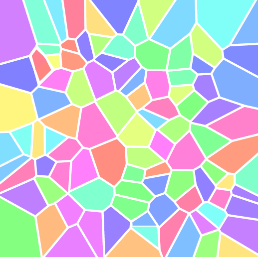
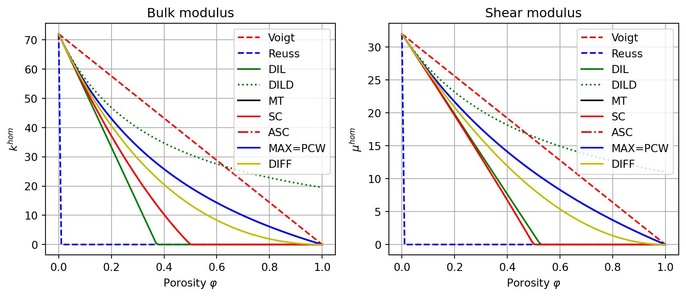

import numpy as np
from echoes import *
import math
import matplotlib.pyplot as plt
np.set_printoptions(precision=6, suppress=True)12 Homogenization schemes
Principle of homogenization schemes
A RVE \(\Omega\) is composed of \(N\) phases (\(\Omega = \cup_{r=1}^N \Omega_r\)), each phase \(r\) having stiffness \(\uuuu{C}_r\) and volume fraction \(f_r\). Under homogeneous strain boundary conditions (\(\uv{u} = \E \cdot \x\) on \(\partial\Omega\)), by linearity the macroscopic stiffness satisfies:
\[ \uuuu{C}^\textrm{hom} = \sum_{r=1}^N f_r \uuuu{C}_r : \uuuu{A}_r \tag{12.1}\]
where \(\uuuu{A}_r\) is the strain concentration tensor of phase \(r\), satisfying \(\sum_{r=1}^N f_r \uuuu{A}_r = \uuuu{I}\).
Each homogenization scheme approximates \(\uuuu{A}_r\) by solving an auxiliary Eshelby problem: each phase is embedded individually in an infinite reference medium \(\uuuu{C}^\textrm{ref}\) subjected to a remote strain \(\E^0\).

The dilute concentration tensor of phase \(r\) in reference medium \(\uuuu{C}^\textrm{ref}\) is:
\[ \uuuu{A}_r^{dil} = \left(\uuuu{I} + \uuuu{P}(\uuuu{C}^\textrm{ref}, \uu{A}_r) : \delta\uuuu{C}_r\right)^{-1} \qquad \delta\uuuu{C}_r = \uuuu{C}_r - \uuuu{C}^\textrm{ref} \tag{12.2}\]
where \(\uuuu{P}(\uuuu{C}^\textrm{ref}, \uu{A}_r)\) is the Hill polarization tensor depending on the reference medium and the inclusion shape \(\uu{A}_r\) (see Chapter 5).
The schemes differ in the choice of \(\uuuu{C}^\textrm{ref}\) and how the concentration tensors are assembled. The available schemes in Echoes are listed in the following table.
| Keyword | Scheme | Reference medium | Iterative |
|---|---|---|---|
VOIGT |
Voigt bound | — | No |
REUSS |
Reuss bound | — | No |
DIL |
Dilute (strain) | Matrix \(\uuuu{C}_0\) | No |
DILD |
Dilute (stress) | Matrix \(\uuuu{C}_0\) | No |
MT |
Mori-Tanaka | Matrix \(\uuuu{C}_0\) | No |
SC |
Self-consistent | Effective \(\uuuu{C}^\textrm{hom}\) | Yes |
ASC |
Asymmetric self-consistent | Effective \(\uuuu{C}^\textrm{hom}\) (inclusions) | Yes |
MAX |
Maxwell | Matrix \(\uuuu{C}_0\) | No |
PCW |
Ponte Castañeda-Willis | Matrix \(\uuuu{C}_0\) | No |
DIFF |
Differential | Evolving \(\uuuu{C}^\textrm{hom}(f)\) | No (ODE) |
The homogenize function
All schemes share the same Python interface:
Chom = homogenize(prop="C", rve=myrve, scheme=sch,
verbose=False, maxnb=100, epsrel=1.e-6)where:
propis the property name ("C"for stiffness,"K"for conductivity, …)rveis the RVE (see Chapter 11)schemeis one ofVOIGT,REUSS,DIL,DILD,MT,SC,ASC,MAX,PCW,DIFFverboseprints iteration details (useful for iterative schemes)maxnbandepsrelare the maximum number of iterations and relative tolerance for iterative schemes
The result is a tensor_param object; for isotropic results, .k, .mu, .E, .nu give the elastic moduli.
The concentration keyword
Passing concentration=True stores the strain concentration tensors on each inclusion after the call. More precisely, each inclusion’s .eE attribute holds \(\uuuu{A}_r^{dil}\) — the dilute (un-normalized) tensor. The actual concentration tensor satisfying \(\sum_r f_r \uuuu{A}_r = \uuuu{I}\) is:
\[ \uuuu{A}_r = \uuuu{A}_r^{dil} : \left(\sum_s f_s \uuuu{A}_s^{dil}\right)^{-1} \]
Application — Biot coefficient of a porous medium. In linear poromechanics the second-order Biot tensor \(\uu{b}\) links the macroscopic strain to the pore-pressure loading (Dormieux et al., 2006):
\[ \uu{b} = f_p\,\uu{I} : \uuuu{A}_p \]
where \(f_p\) is the porosity and \(\uuuu{A}_p\) is the pore strain-concentration tensor. In Kelvin-Mandel notation this is ver["PORE"].factor * Id2.dot(Ap).
f_por = 0.1
ver_sp = rve(matrix="SOLID")
ver_sp["SOLID"] = ellipsoid(shape=spherical, fraction=1.-f_por,
prop={"C": stiff_kmu(72., 32.)})
ver_sp["PORE"] = ellipsoid(shape=spherical, fraction=f_por,
prop={"C": tZ4})
# homogenize with concentration=True fills .eE on each inclusion
Chom_sp = homogenize(prop="C", rve=ver_sp, scheme=MT,
concentration=True, verbose=False)
# normalize: A_r = eE_r · (Σ_s f_s eE_s)^{-1}
sum_feE = (ver_sp["SOLID"].factor * ver_sp["SOLID"].eE
+ ver_sp["PORE"].factor * ver_sp["PORE"].eE)
Ap = ver_sp["PORE"].eE.dot(np.linalg.inv(sum_feE))
# Biot tensor b = f_p * I : A_p (second-order, KM 6-vector)
# For an isotropic result the first three components equal b_scalar
b_vec = ver_sp["PORE"].factor * Id2.dot(Ap)
b_scalar = np.mean(b_vec[:3]) # = tr(b)/3 for isotropic b
print(f"k_hom = {Chom_sp.k:.4f} GPa")
print(f"Biot b (KM 6-vector): {b_vec}")
print(f"Biot b scalar (tensorial route) = {b_scalar:.6f}")
# Cross-check: scalar formula b = 1 - k_hom/k_solid
print(f"Scalar check b = 1 - k_hom/k_s = {1. - Chom_sp.k/72.:.6f}")k_hom = 55.4439 GPa
Biot b (KM 6-vector): [0.229947 0.229947 0.229947 0. 0. 0. ]
Biot b scalar (tensorial route) = 0.229947
Scalar check b = 1 - k_hom/k_s = 0.229947For an isotropic medium with a homogeneous solid (bulk modulus \(k_s\)), the Biot coefficient simplifies to the scalar \(b = 1 - k^{hom}/k_s\), which the tensorial route confirms. The general formula via concentration=True is needed when the solid is anisotropic, multi-phase, or when the pore shape is non-spherical (anisotropic Biot tensor).
Voigt and Reuss bounds (VOIGT, REUSS)
These are the simplest estimates and provide strict bounds on the effective stiffness:
\[ \uuuu{C}^\textrm{Voigt} = \sum_{r=1}^N f_r \uuuu{C}_r \qquad\text{(arithmetic mean — upper bound)} \tag{12.3}\]
\[ \uuuu{C}^\textrm{Reuss} = \left(\sum_{r=1}^N f_r \uuuu{C}_r^{-1}\right)^{-1} \qquad\text{(harmonic mean — lower bound)} \tag{12.4}\]
They correspond to the assumptions of uniform strain (Voigt) and uniform stress (Reuss) throughout the RVE. These estimates are not accurate for most real composites but serve as bounding references.
# Two-phase porous medium: solid + pores
Cs = stiff_kmu(72., 32.) # solid phase
Cp = stiff_kmu(1e-6, 1e-6) # pore phase (nearly zero stiffness)
myrve = rve(matrix="SOLID")
myrve["SOLID"] = ellipsoid(shape=spherical, symmetrize=[ISO],
prop={"C": Cs}, fraction=0.8)
myrve["PORE"] = ellipsoid(shape=spherical, symmetrize=[ISO],
prop={"C": Cp}, fraction=0.2)
CV = homogenize(prop="C", rve=myrve, scheme=VOIGT)
CR = homogenize(prop="C", rve=myrve, scheme=REUSS)
print(f"Voigt: k={CV.k:.3f}, mu={CV.mu:.3f}")
print(f"Reuss: k={CR.k:.3f}, mu={CR.mu:.3f}")Voigt: k=57.600, mu=25.600
Reuss: k=0.000, mu=0.000Dilute strain scheme (DIL)
The dilute scheme embeds each inclusion in the matrix \(\uuuu{C}_0\), ignoring interactions between inclusions. The remote strain equals the macroscopic strain (\(\E^0 = \E\)), which is valid only at low inclusion concentrations. The effective stiffness is:
\[ \uuuu{C}^\textrm{DIL} = \uuuu{C}_0 + \sum_{r \neq 0} f_r \,\delta\uuuu{C}_r : \uuuu{A}_r^{dil}(\uuuu{C}_0) \tag{12.5}\]
where the sum runs over non-matrix phases only. Since mutual interactions are neglected, the result can overestimate stiffness at moderate to high concentrations.
CDIL = homogenize(prop="C", rve=myrve, scheme=DIL)
print(f"Dilute: k={CDIL.k:.3f}, mu={CDIL.mu:.3f}")Dilute: k=33.300, mu=19.823Dilute stress scheme (DILD)
The dilute stress scheme is the dual counterpart of DIL, formulated in terms of compliance. It applies a remote stress \(\Sig^0 = \Sig\) (rather than a remote strain), which is more natural when inclusions are much softer than the matrix. Working on compliances \(\uuuu{S}_r = \uuuu{C}_r^{-1}\):
\[ \uuuu{S}^\textrm{DILD} = \uuuu{S}_0 + \sum_{r \neq 0} f_r \,\delta\uuuu{S}_r : \uuuu{B}_r^{dil}(\uuuu{C}_0) \tag{12.6}\]
where \(\delta\uuuu{S}_r = \uuuu{S}_r - \uuuu{S}_0\) is the compliance contrast and \(\uuuu{B}_r^{dil} = (\uuuu{I} + \uuuu{Q}_0 : \delta\uuuu{S}_r)^{-1}\) uses the dual Hill tensor \(\uuuu{Q}_0 = \uuuu{C}_0 - \uuuu{C}_0 : \uuuu{P}_0 : \uuuu{C}_0\).
For the same porous medium, the two dilute schemes give different results: DILD is stiffer than DIL.
CDILD = homogenize(prop="C", rve=myrve, scheme=DILD)
print(f"Dilute (stress): k={CDILD.k:.3f}, mu={CDILD.mu:.3f}")Dilute (stress): k=46.829, mu=23.179Mori-Tanaka scheme (MT)
The Mori-Tanaka scheme (Bornert et al., 2001) is the most widely used matrix/inclusion scheme. It corrects the dilute scheme by requiring that the strain concentration tensors sum to the identity (F.2). The key idea: each inclusion sees the mean strain of the matrix phase as its remote field, which accounts for interactions in an average sense.

The strain concentration tensors satisfy:
\[ \uuuu{A}_r^{MT} = \uuuu{A}_r^{dil} : \left(\sum_{s=0}^{N} f_s \,\uuuu{A}_s^{dil}\right)^{-1} \qquad \uuuu{A}_0^{dil} = \uuuu{I} \tag{12.7}\]
and the effective stiffness is:
\[ \uuuu{C}^{MT} = \left(\sum_{r=0}^{N} f_r \,\uuuu{C}_r : \uuuu{A}_r^{dil}\right) : \left(\sum_{r=0}^{N} f_r \,\uuuu{A}_r^{dil}\right)^{-1} \tag{12.8}\]
The MT scheme is exact in the dilute limit and well-suited for matrix-inclusion microstructures where the matrix is connected.
CMT = homogenize(prop="C", rve=myrve, scheme=MT)
print(f"Mori-Tanaka: k={CMT.k:.3f}, mu={CMT.mu:.3f}")Mori-Tanaka: k=43.065, mu=21.685The MT scheme also handles multi-phase RVEs with different inclusion shapes, orientations and interface conditions:
# Multi-phase example: spheres + spheroids + n-layer sphere
myrve3 = rve(matrix="MATRIX")
myrve3["MATRIX"] = ellipsoid(shape=spherical,
prop={"C": stiff_kmu(5.4, 3.2)}, fraction=0.7)
myrve3["SPHEROIDS"] = ellipsoid(shape=spheroidal(0.1),
symmetrize=[ISO], prop={"C": stiff_kmu(1.4, 0.6)}, fraction=0.1)
myrve3["SPN"] = sphere_nlayers(radius=1.,
layer_fractions=[0.2, 0.8], fraction=0.2,
prop={"C": [stiff_kmu(0.8, 0.3), stiff_kmu(4.2, 3.1)]},
interf_prop={"C": [[NODISC], [2.1, 1.5, PRIMALDISC]]})
CMT3 = homogenize(prop="C", rve=myrve3, scheme=MT)
print(CMT3)
print(f"k={round(CMT3.k,3)}, mu={round(CMT3.mu,3)}, "
f"E={round(CMT3.E,3)}, nu={round(CMT3.nu,3)}")Order 4 ISO tensor | Param(size=2)=[ 9.75351 4.10819 ] | Angles(size=0)=[ ]
[ 5.98996 1.88177 1.88177 0 0 0
1.88177 5.98996 1.88177 0 0 0
1.88177 1.88177 5.98996 0 0 0
0 0 0 4.10819 0 0
0 0 0 0 4.10819 0
0 0 0 0 0 4.10819 ]
k=3.251, mu=2.054, E=5.09, nu=0.239Self-consistent scheme (SC)
The self-consistent scheme (Zaoui, 2002) is adapted to fully disordered materials where no phase plays a privileged role of connected matrix (e.g., polycrystals, granular media). Each phase is embedded in the homogenized medium itself:
\[ \uuuu{A}_r^{SC} = \left(\uuuu{I} + \uuuu{P}(\uuuu{C}^{hom}) : \delta\uuuu{C}_r^{hom}\right)^{-1} \qquad \delta\uuuu{C}_r^{hom} = \uuuu{C}_r - \uuuu{C}^{hom} \tag{12.9}\]
Since \(\uuuu{C}^{hom}\) appears on both sides, this gives the implicit fixed-point equation:
\[ \uuuu{C}^{SC} = \left(\sum_{r=1}^{N} f_r \,\uuuu{C}_r : \uuuu{A}_r^{SC}\right) : \left(\sum_{r=1}^{N} f_r \,\uuuu{A}_r^{SC}\right)^{-1} \tag{12.10}\]
solved iteratively. The SC scheme naturally predicts percolation thresholds and handles topological transitions (e.g., the solid matrix losing connectivity). The maxnb and epsrel parameters control convergence.

CSC = homogenize(prop="C", rve=myrve, scheme=SC,
verbose=True, maxnb=300, epsrel=1.e-10)
print(f"Self-consistent: k={CSC.k:.3f}, mu={CSC.mu:.3f}")Self-consistent: k=37.156, mu=19.629
Fixed point iterations ................ #iter=15 error=9.38957e-11
Note
The SC scheme predicts zero stiffness (percolation threshold) when the pore fraction reaches a critical value (around 50% for spherical pores), unlike the MT scheme which only reaches zero at 100% porosity.
Asymmetric self-consistent scheme (ASC)
The asymmetric self-consistent scheme (Saevik et al., 2014) is a variant of the SC scheme designed for matrix-inclusion microstructures. Unlike SC (where all phases — including the matrix — are embedded in the effective medium), ASC treats the phases asymmetrically:
- Inclusions are embedded in the current effective medium \(\uuuu{C}^{hom}\) to compute their contribution
- The matrix contributes directly as \(\uuuu{C}_0\)
This leads to the fixed-point equation:
\[ \uuuu{C}^{ASC} = \uuuu{C}_0 + \sum_{r \neq 0} f_r \left(\uuuu{C}_r - \uuuu{C}^{ASC}\right) : \left(\uuuu{I} + \uuuu{P}(\uuuu{C}^{ASC}) : \left(\uuuu{C}_r - \uuuu{C}^{ASC}\right)\right)^{-1} \tag{12.11}\]
solved iteratively. The ASC scheme interpolates between MT (at low concentrations) and SC behavior, while preserving the matrix/inclusion topology at all concentrations. When inclusions are softer than the matrix, the iteration is performed on compliances instead.
CASC = homogenize(prop="C", rve=myrve, scheme=ASC,
verbose=True, maxnb=300, epsrel=1.e-10)
print(f"Asymmetric SC: k={CASC.k:.3f}, mu={CASC.mu:.3f}")Asymmetric SC: k=37.156, mu=19.629
Fixed point iterations .. #iter=0 error=1.50869e-11Maxwell scheme (MAX)
The Maxwell scheme (Withers, 1989) considers all inclusions enclosed in a single outer ellipsoidal domain \(\Omega^{MAX}\) (the Maxwell domain) embedded in the matrix. It equates the far-field disturbance produced by this domain (treated as an equivalent single inhomogeneity) with the sum of individual disturbances of each inclusion:
\[ \uuuu{C}^{MAX} = \uuuu{C}_0 + \left[\left(\sum_{r \neq 0} f_r \,\delta\uuuu{C}_r : \uuuu{A}_r^{dil}(\uuuu{C}_0)\right)^{-1} - \uuuu{P}(\uuuu{C}_0, \Omega^{MAX})\right]^{-1} \tag{12.12}\]
where \(\uuuu{P}(\uuuu{C}_0, \Omega^{MAX})\) is the Hill tensor of the Maxwell domain (the outer ellipsoid defined by the RVE shape). This scheme is explicit (non-iterative) and naturally satisfies the exact dilute limit.
In Echoes, the Maxwell domain shape is set by the RVE’s own shape (its self() ellipsoid). By default this is a sphere.
CMAX = homogenize(prop="C", rve=myrve, scheme=MAX)
print(f"Maxwell: k={CMAX.k:.3f}, mu={CMAX.mu:.3f}")Maxwell: k=43.065, mu=21.685
Note
For spherical inclusions in an isotropic matrix with a spherical Maxwell domain, the Maxwell and MT schemes give identical results. Differences appear when the inclusion shapes or the Maxwell domain are non-spherical.
Ponte Castañeda-Willis scheme (PCW)
The Ponte Castañeda-Willis scheme (Willis, 1977) introduces a distribution ellipsoid \(\Omega^d\) distinct from the inclusion shapes to model the spatial arrangement of inclusions. This distribution captures whether inclusions are clustered, layered, or randomly distributed.
\[ \uuuu{C}^{PCW} = \uuuu{C}_0 + \left[\left(\sum_{r \neq 0} f_r \,\delta\uuuu{C}_r : \uuuu{A}_r^{dil}(\uuuu{C}_0)\right)^{-1} - \uuuu{P}(\uuuu{C}_0, \Omega^d)\right]^{-1} \tag{12.13}\]
The PCW formula is mathematically identical to the Maxwell formula (F.9) with \(\Omega^d\) playing the role of \(\Omega^{MAX}\). The distinction is conceptual:
- Maxwell: \(\Omega^{MAX}\) is the bounding ellipsoid of the inclusion cluster
- PCW: \(\Omega^d\) describes the statistical distribution of inclusion centers
In particular, when \(\Omega^d\) coincides with the individual inclusion shapes, the PCW scheme reduces to Mori-Tanaka. This confirms that MT implicitly assumes inclusions are distributed with the same ellipsoidal statistics as their shapes.
In Echoes, the distribution ellipsoid is the RVE’s own shape (same as for MAX).
CPCW = homogenize(prop="C", rve=myrve, scheme=PCW)
print(f"PCW: k={CPCW.k:.3f}, mu={CPCW.mu:.3f}")PCW: k=43.065, mu=21.685Differential scheme (DIFF)
The differential scheme builds the composite incrementally: starting from the pure matrix, a small fraction \(\ud f\) of inclusions is added at each step and the effective properties are immediately updated as the new reference. This leads to the ODE:
\[ \frac{\ud\uuuu{C}^{hom}}{\ud f} = \frac{1}{1-f} \left(\uuuu{C}_1 - \uuuu{C}^{hom}\right) : \left(\uuuu{I} + \uuuu{P}(\uuuu{C}^{hom}) : \left(\uuuu{C}_1 - \uuuu{C}^{hom}\right)\right)^{-1} \tag{12.14}\]
with \(\uuuu{C}^{hom}(0) = \uuuu{C}_0\). The \(1/(1-f)\) factor accounts for the fact that each increment dilutes into the remaining matrix volume. The ODE is integrated numerically up to the desired total inclusion fraction.
The differential scheme is particularly useful at high concentrations and avoids unphysical percolation artifacts. It predicts zero stiffness for a porous medium only at 100% porosity (like MT).
CDIFF = homogenize(prop="C", rve=myrve, scheme=DIFF)
print(f"Differential: k={CDIFF.k:.3f}, mu={CDIFF.mu:.3f}")Differential: k=40.586, mu=20.859Comparative example: porous medium
To illustrate the differences between all schemes, we plot the bulk modulus \(k^{hom}\) and shear modulus \(\mu^{hom}\) of a spherical pore porous medium as a function of porosity \(\varphi\), for all available schemes.
Figure — scheme comparison: effective moduli vs porosity
ks, mus = 72., 32.
kp, mup = 1.e-6, 1.e-6
rve_por = rve(matrix="SOLID")
rve_por["SOLID"] = ellipsoid(shape=spherical, symmetrize=[ISO],
prop={"C": stiff_kmu(ks, mus)})
rve_por["PORE"] = ellipsoid(shape=spherical, symmetrize=[ISO],
prop={"C": stiff_kmu(kp, mup)})
schemes = [VOIGT, REUSS, DIL, DILD, MT, SC, ASC, MAX, DIFF]
labels = ["Voigt", "Reuss", "DIL", "DILD", "MT", "SC", "ASC", "MAX=PCW", "DIFF"]
styles = ["r--","b--","g-","g:","k-","r-","r-.","b-","y-"]
phi_list = np.linspace(0., 1., 101)
fig, (ax1, ax2) = plt.subplots(1, 2, figsize=(9, 4))
for sch, lbl, sty in zip(schemes, labels, styles):
lk, lmu = [], []
for phi in phi_list:
rve_por["PORE"].fraction = phi
rve_por["SOLID"].fraction = 1. - phi
try:
C = homogenize(prop="C", rve=rve_por, scheme=sch,
verbose=False, epsrel=1.e-8, maxnb=300)
lk.append(max(C.k, 0.))
lmu.append(max(C.mu, 0.))
except Exception:
lk.append(float("nan"))
lmu.append(float("nan"))
ax1.plot(phi_list, lk, sty, label=lbl)
ax2.plot(phi_list, lmu, sty, label=lbl)
ax1.set_xlabel(r"Porosity $\varphi$"); ax1.set_ylabel(r"$k^{hom}$")
ax1.set_title("Bulk modulus"); ax1.grid(True); ax1.legend()
ax2.set_xlabel(r"Porosity $\varphi$"); ax2.set_ylabel(r"$\mu^{hom}$")
ax2.set_title("Shear modulus"); ax2.grid(True); ax2.legend()
plt.tight_layout()
plt.show()
Note
Key observations from the comparison:
- Voigt/Reuss are the extremal bounds; all other schemes lie between them.
- DIL/DILD deviate from the bounds for large porosity and can give non-physical results (negative moduli).
- MT is the natural choice for a solid matrix with embedded pores; it predicts zero stiffness only at \(\varphi=1\).
- SC predicts a percolation threshold around \(\varphi \approx 0.5\) (zero stiffness for spherical pores).
- ASC lies between MT and SC; it preserves the matrix topology while using the effective medium as reference for inclusions.
- MAX/PCW coincide with MT for spherical inclusions in an isotropic matrix (when the distribution ellipsoid is spherical).
- DIFF gives a smooth transition to zero, always positive, making it robust at high concentrations.
Using a user_inclusion in a scheme
A user_inclusion (see Chapter 10) is used exactly like any other inclusion inside an rve: it is assigned a fraction, stored in the rve dictionary, and passed to homogenize. The homogenization engine calls set_ref (which in turn triggers build_all) automatically before each evaluation of the concentration tensors.
Validation: user_inclusion vs standard inclusion in a scheme
Cp_u = stiff_kmu(1.e-6, 1.e-6) # near-zero stiffness for pores
Cs_u = stiff_kmu(72., 32.) # solid mineral
class SphereInISO(user_inclusion):
"""Spherical inhomogeneity in an isotropic matrix.
Concentration tensors computed analytically via the Hill
polarization tensor formula."""
def __init__(self, prop, fraction=0., symmetrize=[]):
super().__init__(fraction, symmetrize)
for key, val in prop.items():
user_inclusion.set_prop(self, key, val)
def build_all(self):
C0 = self.ref.array
S0 = np.linalg.inv(C0)
k0, mu0 = self.ref.kmu
Ci = self.prop(self.refname).array
P = 1. / (3*k0 + 4*mu0) * (J4 + 3.*(k0 + 2*mu0) / (5*mu0) * K4)
eE = np.linalg.inv(Id4 + P.dot(Ci - C0))
eS = eE.dot(S0)
sE = Ci.dot(eE)
sS = Ci.dot(eS)
return {"eE": eE, "eS": eS, "sE": sE, "sS": sS}
# RVE: two user_inclusions (solid matrix + spherical pores)
ver_usr = rve(matrix="SOLID")
ver_usr["SOLID"] = SphereInISO(prop={"C": Cs_u})
ver_usr["PORE"] = SphereInISO(prop={"C": Cp_u})
# Cross-check: same RVE with built-in ellipsoids
ver_ell = rve(matrix="SOLID")
ver_ell["SOLID"] = ellipsoid(shape=spherical, symmetrize=[ISO], prop={"C": Cs_u})
ver_ell["PORE"] = ellipsoid(shape=spherical, symmetrize=[ISO], prop={"C": Cp_u})
phi_test = 0.3
for sch in [MT, SC]:
ver_usr["PORE"].fraction = phi_test
ku, muu = homogenize(prop="C", rve=ver_usr, scheme=sch, verbose=False).kmu
ver_ell["PORE"].fraction = phi_test
ke, mue = homogenize(prop="C", rve=ver_ell, scheme=sch, verbose=False).kmu
print(f"{str(sch):4s} user_inclusion: k={ku:.6f} mu={muu:.6f} | "
f"ellipsoid: k={ke:.6f} mu={mue:.6f} | "
f"err_k={abs(ku-ke):.1e} err_mu={abs(muu-mue):.1e}")MT user_inclusion: k=33.460582 mu=17.626742 | ellipsoid: k=33.460582 mu=17.626742 | err_k=0.0e+00 err_mu=3.6e-15
SC user_inclusion: k=22.689245 mu=13.264364 | ellipsoid: k=22.689245 mu=13.264364 | err_k=1.4e-14 err_mu=1.8e-15\(\,\)